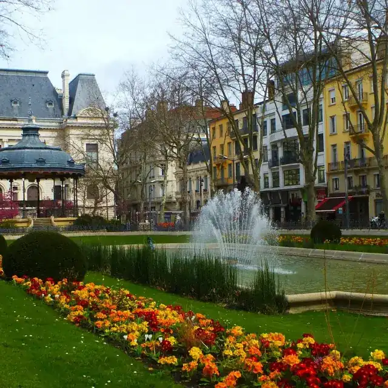
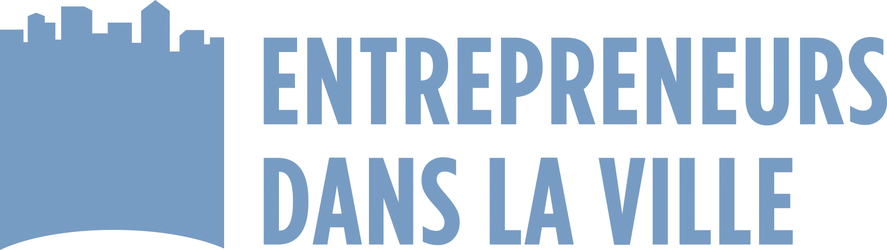
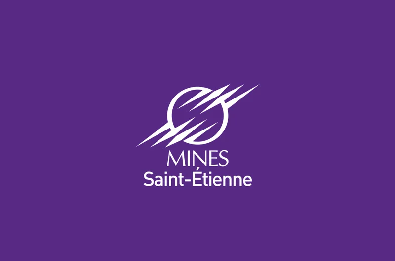

Flooow aide les familles à accéder plus facilement aux activités pour leurs enfants en reliant trois informations souvent dispersées : l'offre disponible, les aides possibles et les conditions d'accès réelles.
Le renoncement vient souvent d'une accumulation de petits obstacles séparés.
Les activités existent, mais elles ne sont pas toujours simples à repérer pour les familles qui ne connaissent pas les bons canaux ou les structures locales.
Entre le prix affiché, les aides nationales, les dispositifs CAF/MSA, les aides locales et les conditions propres à chaque structure, le reste à charge est difficile à anticiper.
Les horaires, le trajet, l'accompagnement nécessaire ou l'absence de solutions de déplacement font renoncer avant même le premier contact avec la structure.
Quatre portes d'entrée pour les familles : leurs aides, leurs trajets, leur ville et les clubs solidaires près de chez elles.
Répondez à quelques questions, découvrez vos droits.
 Éco-mobilité
Éco-mobilité
Vélo, bus ou covoiturage : à vous de choisir.

LocalActus, agenda et infos pratiques près de chez vous.
Mettez en lumière un coach, un bénévole, un club.
Le site explique et oriente — l'application permet d'agir.
L'offre, les aides cumulables, le reste à charge réel et le trajet — réunis dans une seule fiche, comme dans l'application.
On affiche les dispositifs réellement mobilisables — nationaux et locaux — et ce qui se cumule.
Temps de trajet, transports et solutions de mobilité douce autour de l'activité.
Flooow relie dans un seul parcours lisible les trois informations que les familles doivent aujourd'hui chercher séparément.
Repérer les activités par âge, type, lieu et accessibilité. Voir les structures locales, leurs horaires, leurs publics et leurs disponibilités.
Comprendre les aides possibles, le coût réel et le reste à charge. Distinguer prix affiché, aides nationales et dispositifs locaux cumulables.
Anticiper la proximité, le trajet, l'accompagnement nécessaire ou les solutions de déplacement disponibles autour de l'activité.
Flooow avance avec celles et ceux qui vivent l'accès aux activités au quotidien. Chaque profil apporte une pièce du puzzle.
partagent leurs besoins réels et les freins qu'elles rencontrent.
disent ce qui donne envie, ce qui bloque, ce qui manque.
rendent leur offre visible et plus simple d'accès.
éclairent l'action locale à partir de ce qui remonte du terrain.
Ils construisent la démarche avec nous


Vous portez un territoire ou une structure ?
Le site oriente chaque public vers une action simple. Choisissez la vôtre — votre retour terrain fait avancer la démarche.
Partagez un besoin ou un frein d'accès. Votre retour aide à améliorer l'accès pour tous.
Dites ce qui donne envie, ce qui bloque, quels lieux et formats manquent. Directement.
Référencez une activité ou une structure et contribuez à la cartographie locale.
Mieux comprendre les freins d'accès et tester une démarche locale avec vos partenaires.
Découvrez pourquoi Flooow existe, à qui ça s'adresse et comment le projet se construit.
Uniquement l'essentiel au premier contact. Aucune donnée sensible collectée initialement.
Design pensé pour tous les publics, sur tous les écrans, avec des contrastes suffisants.
Un projet qui progresse avec le terrain, pas une promesse de couverture nationale immédiate.
Les informations sur les aides et les structures sont vérifiées et actualisées régulièrement.
Famille, jeune, structure ou collectivité — chaque retour rend les activités plus accessibles aux enfants. On construit avec le terrain, pas à sa place.
Flooow agit sur trois frictions qui se cumulent : repérer l'offre, comprendre les aides, anticiper l'accès réel.
Des aides existent. Des activités existent. Mais les familles peinent encore à relier ces informations dans un parcours lisible.
Personnes citent le manque d'information sur les aides comme première cause de non-recours
Source : études non-recours 2022-2024En moyenne, une famille doit consulter pour trouver l'offre, comprendre les aides et vérifier l'accès
Observation terrain FlooowLe Pass'Sport, les aides CAF/MSA et les dispositifs locaux varient selon l'âge, la situation et le territoire
Données 2025-2026Aider à repérer des offres sportives, culturelles, de loisirs, de vacances ou d'apprentissage adaptées aux enfants — par âge, lieu, accessibilité et disponibilité.
Aider à distinguer prix affiché, aides possibles et reste à charge. Rendre lisible ce qui est cumulable, ce qui est conditionnel, ce qui est local.
Ne pas séparer l'offre, les démarches, les contraintes d'horaires et les questions d'accès. Remettre ces éléments dans un seul parcours lisible.
Flooow ne remplace pas les structures, les collectivités ou les dispositifs existants. Le projet cherche à mieux les relier pour rendre le parcours des familles plus clair et plus proche du terrain.
Pas de "tout en un" magique. Pas de chiffres gonflés. Pas de collecte excessive. Pas de couverture nationale immédiate. Flooow préfère une progression territoriale lisible, documentée et utile.
Des besoins concrets, des freins remontés, des retours d'usage. Les familles sont au cœur de la démarche.
Des envies réelles, des formats crédibles, des lieux et horaires observés. La parole des jeunes, directement.
Des structures, associations et collectivités qui aident à rendre l'offre plus visible et plus actionnable.
La meilleure manière de faire avancer Flooow est de partir de situations réelles.
Flooow aide à relier activités, aides et accès réel pour éclairer l'action locale. Pour les collectivités, associations, équipements, centres sociaux, clubs et partenaires locaux.
Mieux documenter les besoins remontés par les familles et les jeunes sur votre territoire. Identifier les freins les plus fréquents.
Rendre visibles les structures, les activités, les aides disponibles et les points d'accès. Mettre en lien les acteurs locaux.
Hiérarchiser les freins récurrents et suivre une démarche pilote. Produire une synthèse partageable entre partenaires.
Des modules honnêtes, avec leur niveau de maturité affiché.
Visualiser les activités, publics, tarifs, contacts, aides connues et informations d'accès.
Voir remonter les motifs récurrents : information, coût, aides, horaires, déplacement.
Produire une synthèse territoriale simple à partager entre partenaires du projet.
Hiérarchiser les interventions prioritaires selon les freins identifiés sur le terrain.
Restitution anonymisée et agréée des données collectées au bénéfice du territoire.
Accès privé aux documents de travail, ressources partagées et vues de suivi du pilote.
Identifier les publics prioritaires, les acteurs à mobiliser et le périmètre territorial du pilote.
Cartographier l'offre existante, les aides disponibles et les points d'accès sur le territoire.
Via Flooow Family, Flooow Jeunes et Flooow Territoires — besoins, freins, envies remontés directement.
Synthèse partagée avec les partenaires du pilote, préconisations et plan de déploiement progressif.
Flooow ne demande que les informations utiles au premier contact. Les premiers formulaires n'ont pas vocation à recueillir des données sensibles.
Données minimisées : uniquement ce qui est nécessaire à la démarche pilote.
Pas de données sensibles au premier contact — familles comme structures.
Finalité explicite : améliorer l'accès aux activités sur votre territoire, rien d'autre.
Hébergement et conformité documentés dans notre page Confiance.
Partons d'un besoin concret, pas d'un discours générique.
Votre retour terrain est ce qui rend Flooow utile. Familles, jeunes, structures, collectivités — une même ambition : rendre les activités plus accessibles aux enfants.
Vous cherchez une activité pour votre enfant ? Vous hésitez à cause du coût, des aides, du trajet ou des démarches ? Partagez ce qui bloque aujourd'hui.
Qu'est-ce qui donne envie de participer ? Qu'est-ce qui décourage ? Quels lieux, quels horaires, quels formats manquent ? Votre avis compte.
Vous proposez une activité, accompagnez des familles ou représentez une structure ? Référencez-vous, contribuez ou demandez un échange.
Vous cherchez une activité pour votre enfant ? Dites-nous simplement ce qui bloque aujourd'hui. Votre retour aide à améliorer l'accès pour toutes les familles.
Qu'est-ce qui donne envie de participer ? Qu'est-ce qui bloque ? Quels lieux, quels horaires, quels formats manquent ? Parlez-nous directement.
Vous proposez une activité, accompagnez des familles ou représentez une structure locale ? Cette porte d'entrée est faite pour vous.
En 20 à 30 minutes, nous regardons ensemble votre contexte, vos publics et la meilleure manière de tester la démarche. Pas de discours générique — une conversation concrète.
Pas de promesse gonflée. Pas de collecte excessive. Flooow construit sa crédibilité sur des engagements concrets et vérifiables.
Flooow ne demande que l'essentiel au premier contact. Les formulaires se limitent à 5 champs maximum. Aucune donnée sensible (santé, handicap, situation familiale détaillée) n'est demandée lors des premiers échanges.
Les données collectées ont une seule finalité : améliorer l'accès aux activités pour les enfants sur les territoires. Elles ne sont ni revendues, ni utilisées à des fins publicitaires ou commerciales.
Vous disposez d'un droit d'accès, de rectification et de suppression de vos données. Pour toute demande : contact@flooow.fr. Délai de réponse : 72h maximum.
Les données sont hébergées en Europe. Aucun transfert hors UE n'est effectué sans votre consentement explicite. La politique d'hébergement est documentée et disponible sur demande.
Flooow est conçu pour être lisible et utilisable par tous les publics, sur tous les supports.
Optimisé pour smartphone, tablette et bureau.
Respect des niveaux WCAG 2.1 AA pour tous les textes.
Zéro jargon institutionnel. Phrases courtes, actions directes.
5 champs max, labels explicites, messages d'erreur clairs.
Déclaration d'accessibilité : Ce site est en cours d'amélioration continue. Si vous rencontrez un problème d'accessibilité, signalez-le à contact@flooow.fr — nous traitons ces retours en priorité.
Flooow est une démarche pilote, pas une plateforme nationale déployée. Le projet progresse territoire par territoire, en collaboration avec les acteurs locaux. La mention "version bêta" n'est pas utilisée car elle dit peu de chose aux usagers — nous préférons "démarche pilote" ou "territoires d'expérimentation".
Flooow se construit avec les familles, les jeunes et les territoires. Ateliers, entretiens, tests et retours d'usage alimentent chaque évolution. Aucune fonctionnalité n'est développée sans validation terrain préalable.
Les informations sur les aides (Pass'Sport, CAF/MSA, dispositifs locaux) sont vérifiées régulièrement. Chaque page stratégique porte une mention de dernière mise à jour. Dernière révision : juin 2026.
Votre besoin a bien été reçu. Chaque retour de famille aide à mieux comprendre ce qui bloque et à améliorer l'accès aux activités pour tous.
Si vous avez laissé votre email, nous vous tiendrons informé des avancées sur votre territoire.
Ton retour compte vraiment. Il va directement alimenter la réflexion sur les formats et les offres qui manquent pour les jeunes de ton territoire.
Votre structure a bien été référencée. Nous reviendrons vers vous prochainement pour échanger sur la suite.
Nous reviendrons vers vous sous 48h pour confirmer le créneau. En attendant, vous pouvez consulter notre page Territoires pour en savoir plus sur la démarche.
On répond simplement, sans jargon. Dites-nous d'où vous parlez.